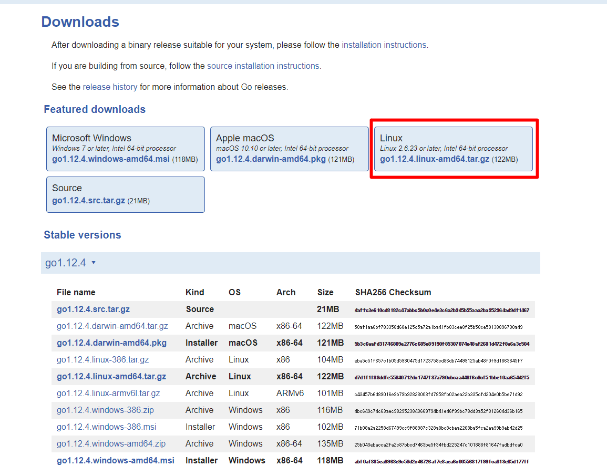
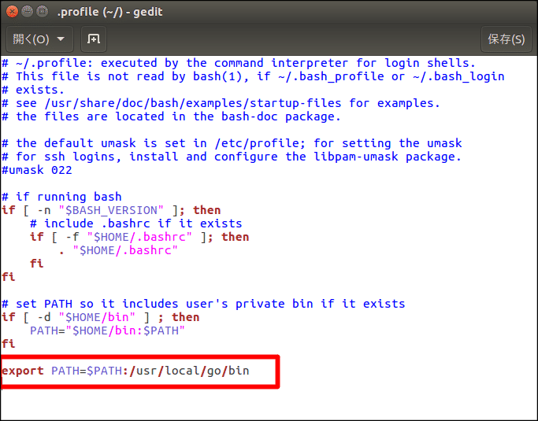
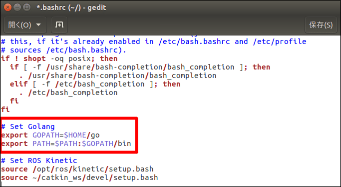

Goのインストール
Goはプログラミング言語の1つである。2009年、GoogleでRobert Griesemer、ロブ・パイク、ケン・トンプソンによって設計された。
Goは、静的型付け、C言語の伝統に則ったコンパイル言語、メモリ安全性（英語版）、ガベージコレクション、構造的型付け（英語版）、CSPスタイルの並行性などの特徴を持つ。Goのコンパイラ、ツール、およびソースコードは、すべてフリーかつオープンソースである。
ディレクトリ構成
Go環境の基本的なディレクトリ構成を以下に示す。
| # | 名称 | 環境変数名 | パス | 備考 |
|---|---|---|---|---|
| 1 | Go本体 | GOROOT | /usr/local/go | |
| 2 | Go関連モジュール | GOPATH | $HOME/go ※ | リンクモジュール格納先 |
| 3 | Goプロジェクトフォルダ | ー | $HOME/MyProjects ※ | ユーザプロジェクト作業先 |
※任意
Goインストール済み確認
ターミナルから以下のコマンドを実行し、バージョンが正しく表示されることを確認する。
$ go version
バージョン表示で失敗する、またはバージョンが古い場合、以下インストールを実施する。
Goインストール
Go未インストール時、ターミナルから以下のコマンドを実行し、インストールを実施する。
Go未インストール時に以下を実施する。
インストールの準備
公式サイト（URL: https://golang.org/dl/）より該当する実行ファイルをダウンロードする。

実行ファイルの展開
ターミナルから以下のコマンドを実行し、実行ファイルを展開する。
$ cd [ダウンロード先] ← 例：~/Download
$ sudo tar -C /usr/local/ -xzf [ダウンロードファイル名] ← 例：go 1.12.4.linux-amd64.tar.gz
$HOME/.profile ファイルを開き、以下のコマンドを追記する。
export PATH=$PATH:/usr/local/go/bin
【追記例】
$ gedit ~/.profile ← エディタ起動

編集後、保存してエディタを閉じる。その後、環境変数の取込みを行うため、ターミナルから以下のコマンドを実行、またはUbuntuを再起動する。
$ source ~/.profile
前項「Goインストール済み確認」に従い、バージョンが正しく表示されることを確認する。
環境変数の設定
$HOME/.bashrc ファイルを開き、以下のコマンドを追記する。
export GOPATH=$HOME/go
export PATH=$PATH:$GOPATH/bin
【追記例】
$ gedit ~/.bashrc ← エディタ起動

編集後、保存してエディタを閉じる。その後、ターミナルから以下のコマンドを実行し、環境変数の取込み、およびフォルダ作成を行う。
$ source ~/.bashrc
$ mkdir $GOPATH
ターミナルから以下のコマンドを実行し、goフォルダが存在していることを確認する。
$ ls $HOME